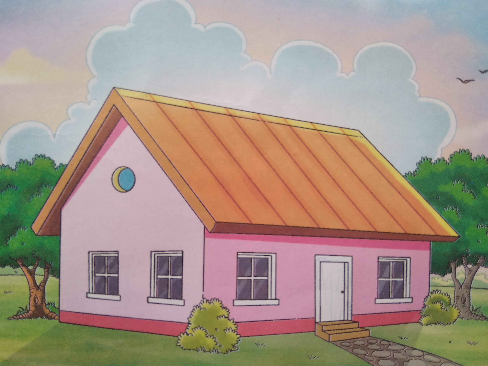

MAGNETstudy
HINDI STORIES
here you got many hindi stories for reading.
प्यारा घर
आखिर यह इतना प्यारा क्यों है? जिसे देखिए, पैर बढ़ाए घर का रास्ता नाप रहा है। जब घर से दफ़्तर जाना पड़ता है तो जल्दी-जल्दी
करते हुए भी देर हो जाती है; मगर न जाने क्यों, बड़े साहब इतनी देर तक ऑफ़िस में डटे रहते हैं। देखिए, पाँच बजने ही वाले हैं, लेकिन यह
फाइल मँगवा रहे हैं। इन्हें क्या है, पाँच मिनट में फर्र से घर जा पहुँचेंगे-मोटर जो है ना! और हमें कोस भर जाना है। घर पहुँचने में कितनी
देर हो जाएगी? अरे भाई मजदूर! हाथ-मुँह धोकर चिलम सम्हाले अभी से कहाँ जाने को तैयार हो गए? ऐसे ही मजदूरी की जाती है? बड़े
अनोखे बेलदार हो। क्या घर जाने के लिए मज़दूरी दी जाती है? और यह क्या? लड़को! मैं तो पढ़ा रहा हूँ न? घंटी बज गई तो क्या, दंत
और मूर्धन्य अक्षर मेरे पेट में कब्र बनाएँगे, जो किताब बंद कर दरवाज़े की ओर नज़र दौड़ाने लगे? घर पाँच मिनट देर से पहुंचे तो क्या?
यह लीजिए-जो कुछ है, घर ले जा रहे हैं। टेबल, कुर्सी, चारपाई, कंघा, शीशा, आटा-दाल, नमक-मिर्च, घी-तेल, गुड़-शक्कर, लोटा-थाली,
पान-तंबाकू, कपड़ा-लत्ता सब कुछ घर में जाएगा। बाज़ार में लाखों चीजें हैं और लाखों औरत-मर्द बाज़ार कर रहे हैं, पर वे सब घर में समा
जाएँगे और फिर दिल्लगी यह कि सब घर का ही रोना रो रहे हैं। लड़की की शादी है तो घर अच्छा चाहिए; और की तो बात ही नहीं, लड़की
अच्छे घर ब्याही जाए, इसी की तलाश है। घर चाहिए, घर। तीसरे-चौथे तल्ले पर किराए की अँधेरी कोठरी है; तो घर है; दो-चार टेढ़े-मेढ़े
डंडे, पत्तों और फूस से ढक दिए गए हैं फिर भी घर है; जेलखाना भी बड़ा घर है और साढ़े तीन हाथ का घर तो सबका घर है; जिसके लिए
कबीर साहब ने कहा है "कहा चुनावै मेडियाँ, लांबी भीत उसारि। 11 घर तो साढ़े तीन हाथ, घड़ी तो पौने चारि।। 
" शहर इसलिए शहर है कि उसमें घर है. गाँव इसलिए गाँव है कि उसमें घर हैं। घर छोड़ना दुनिया छोड़ना है और दुनिया में रहना यानी घर में रहना है। वसाना है, तो घर;
उजाड़ना है, तो घर; आबादी भी घर में, बरबादी भी घर में। लंबे सफर पर निकलते हुए घर मानो घेर लेता है और उससे लौटते हुए घर मानो
खींचे लेता है। फूल की तरह सुबह को घर खिलते हैं और संदूक की तरह रात में बंद हो जाते हैं। आराम है, तो घर में; बीमारी है तो घर में।
रोज़गार करते हैं, तो घर के लिए; बाहर दौड़ते हैं, तो घर के लिए। आदमी की पहचान भी घर है। पति है, तो घरवाला है; स्त्री है, तो
घरवाली है। तबीयत खराब है, तो घर में; और नाराज हैं, तो घर के लोग। चर्चा चलती है, घर-घर निंदा होतीं है, तो घर-घर पूछते हैं-तुम्हारा
घर कहाँ है? कहते हैं-अब तो घर कर लो! निठल्ले हैं, तो घर बैठे हैं, काम-काजी हैं, तो घर भरने में लगे हैं। लोगों को घर-बार से फुरसत
नहीं मिलती। फिर जितना बड़ा घर, उतनी बड़ी बातें। अपने घर की कौन कहेगा? घर तो बँधता ही है, लेकिन घर से से बँधे रहते हैं। घर की
फूट बुरी होती है और घर फोड़ने की बात अच्छी नहीं होती। फिर भी घर फूंककर तमाशा देखने वाले भी घर में रहते हैं। ऐसा है यह घर।
मालूम नहीं, सबसे पहला घर किसने बनाया था और क्यों बनाया था? धूप-सर्दी और हवा-पानी से बचने के लिए होगा। मैं तो समझता हूँ,
घर बनाने वाला वह पहला आदमी स्वर्ग और नरक दोनों देखकर इस दुनिया में आया होगा। मगर, शायद ऐसा भी नहीं। घर बना, तो स्वर्ग
भी बन गया और घर बिगड़ा, तो नरक भी बन गया। प्यार-दुलार, एकता और संगठन है, तो घर स्वर्ग है; वैर-अविचार, फूट और झगड़ा है,
तो घर नरक है। घर और बाहर दो अलग चीजें हैं। दफ़्तर की कुर्सी और घर की चारपाई में बड़ा अंतर है। साहब से बात करने और बीवी से
बतियाने में बड़ा भेद है। बाहर की दृष्टि घर में आकर बदल जाती है। बाहर की बेहयाई घर में लाज बनकर बैठ जाती है। बाहर की गुलामी
घर में स्वामित्व करती है। बाहर का नशा घर में आकर उतरता है। बाहर का सब कुछ भी कुछ नहीं, घर का कुछ नहीं भी सब कुछ। आप
क्यों कहेंगे कि आपके घर में क्या है और क्या हो रहा है? घर का भेदी लंका ढाहे। फकीर चिल्लाता है "ना घर तेरा ना घर मेरा, चिड़िया
रैन-बसेरा रे!" चिल्लाया करे। यह रैन-बसेरा ही सारी दुनिया का घर है। ऐसे घर का भेद कितना भारी होगा? दीवार-से-दीवार, छत-से-छत
और दरवाज़े-से-दरवाज़ा भिड़ा है, सब कुछ दिखाई देता है और सब कुछ सुनाई पड़ता है; लड़ाई भी होती है; गाने भी गाए जाते हैं, पूजा-पाठ
भी होता है और खुस-खुस, फुस-फुस भी होती है, सब जानते हैं, सब पहचानते हैं। हिटलर की हज़ार होशियारी भी राष्ट्र का भेद खोल
सकती है, मगर छोटे से बड़े घर तक की बात मालूम होने पर भी ना मालूम-सी होती है। घरेलू मामलों में दखल देना भी तो बुरबुरा है। अभी, यह
हमारे घर की बात है, घर का झगड़ा है, आप कौन होते हैं बोलनेवाले? अपने-अपने घर के सब राजा हैं, सबके राजसी झगड़े हैं। एक राजा
दूसरे राजा से, खिड़की से झाँककर, बात भले कर ले, परंतु एक-दूसरे की शासन पद्धति की आलोचना नहीं कर सकता, और फिर हर घर में
सब प्रकार की शासन-पद्धतियाँ एक साथ बरती जाती हैं। घर के राजा भी कभी घर प्रजातंत्र के प्रेसिडेंट हैं, तो कभी उसके तानाशाह।
मगर शिकायत यह रह जाती है कि जैसे घर राजा होते हैं, वैसे ही घर की रानी कोई क्यों नहीं होती? घर की मुर्गी दाल-बराबर। बेचारी घर
की रानी अपने घर की है-रानी! मगर यह बात कहे कौन? घर है, घर में चीजें हैं, इंसान है, इंसान की भूख-प्यास है, फिर भी घर नहीं है।
शरीर है और उसके समस्त अवयव तथा इंद्रियाँ हैं, किंतु यदि आत्मा नहीं है, तो मिट्टी का पुतला ही है। घर है, घर में आदमी हैं परंतु यदि
घर' की आत्मा नहीं तो घूरा है-मिट्टी है श्मशान है। घर की यह आत्मा क्या है? यही उसका सूक्ष्म रूप है-चेतन स्वरूप है।  भला, आत्मा किसमें नहीं है? पशु भी तो आत्मा रखते हैं। इसी तरह गृहिणी होने पर भी तो घर, घर नहीं हो जाता? अपने बीवी-बच्चों के साथ रहने पर
भी हम सराय, धर्मशाला और होटल को घर क्यों नहीं समझते? लेकिन जहाँ हम किराये पर भी रहते हैं, वह घर, 'घर' क्यों बन जाता है?
लोग कहते हैं कि घर है या घूरा। इससे क्या मतलब? अस्तव्यस्तता, व्यवस्था, अस्वास्थ्यकर वातावरण जहां रहता है, वह घर घूरा बन
जाता है। जहाँ के लोग मनहूस, - सूरत, विद्वेषी, कलहप्रिय, नीरस और निखटू होते रोती हैं, वह घर नरक-कुंड बन जाता है। जहाँ अकारण
शोक, निंदा, अशुभ इच्छा, व्यर्थ चिंता का वातावरण होता है, वह घर श्मशान बन जाता है। जहाँ अत्याचार, व्यभिचार, दुष्कर्म, ताड़ना
और कुमंत्रणा की हवा बहती है, वह घर काल कोठरी बन जाता है। फिर भी ये सब बातें होती हैं घर में ही और दुनिया में सभी घर धनी होने
का दावा रखते हैं। किसी को घर काटे खाता है, तो कोई घर को चौपट करने पर तुला रहता है और कोई घर में आग लगाकर जमालों की
तरह दूर खड़ा तमाशा देखता है। परंतु यह सब घर की चेतना और उसका प्राण नहीं है, महज जिंदा रहनेवाले साँस लेते रहते हैं। महज मर्द-
औरतें, बूढे-जवान और बच्चों से भरे घर भी नाम के लिए बने रहते हैं। ऐसी जिंदगी कहाँ और ऐसे घर में रहना भी क्या? जहाँ एक की चिंता
सबको चिंतित कर देती है, जहाँ एक का विश्वास सबका विश्वास बन जाता है और जहाँ एक वैभव-गौरव सबका मान-महत्व बन जाता है,
वह घर शक्ति और चेतना का घर है। जहाँ एक का विश्वास सबका धैर्य, एक का मनोरथ सबकी इच्छा, और एक का कार्य सबका
कार्य बन जाता है, वह घर ही अपना घर कहलाता है। घर एक-एक के लिए है और इसीलिए सबके लिए है। यह बात जहाँ रहती है, जहाँ
पाई जाती है, वही घर जीवित है। ऐसा ही घर अनाथों को सनाथ कर देता है, गरीबी का हर्ता होता है और जीवन की समस्त विषमता और
वेदनाओं को समेट लेने वाला कहलाता है। सोचो तो सही, ऐसे चेतना-संपन्न घर कितने हैं और कहाँ हैं?
भला, आत्मा किसमें नहीं है? पशु भी तो आत्मा रखते हैं। इसी तरह गृहिणी होने पर भी तो घर, घर नहीं हो जाता? अपने बीवी-बच्चों के साथ रहने पर
भी हम सराय, धर्मशाला और होटल को घर क्यों नहीं समझते? लेकिन जहाँ हम किराये पर भी रहते हैं, वह घर, 'घर' क्यों बन जाता है?
लोग कहते हैं कि घर है या घूरा। इससे क्या मतलब? अस्तव्यस्तता, व्यवस्था, अस्वास्थ्यकर वातावरण जहां रहता है, वह घर घूरा बन
जाता है। जहाँ के लोग मनहूस, - सूरत, विद्वेषी, कलहप्रिय, नीरस और निखटू होते रोती हैं, वह घर नरक-कुंड बन जाता है। जहाँ अकारण
शोक, निंदा, अशुभ इच्छा, व्यर्थ चिंता का वातावरण होता है, वह घर श्मशान बन जाता है। जहाँ अत्याचार, व्यभिचार, दुष्कर्म, ताड़ना
और कुमंत्रणा की हवा बहती है, वह घर काल कोठरी बन जाता है। फिर भी ये सब बातें होती हैं घर में ही और दुनिया में सभी घर धनी होने
का दावा रखते हैं। किसी को घर काटे खाता है, तो कोई घर को चौपट करने पर तुला रहता है और कोई घर में आग लगाकर जमालों की
तरह दूर खड़ा तमाशा देखता है। परंतु यह सब घर की चेतना और उसका प्राण नहीं है, महज जिंदा रहनेवाले साँस लेते रहते हैं। महज मर्द-
औरतें, बूढे-जवान और बच्चों से भरे घर भी नाम के लिए बने रहते हैं। ऐसी जिंदगी कहाँ और ऐसे घर में रहना भी क्या? जहाँ एक की चिंता
सबको चिंतित कर देती है, जहाँ एक का विश्वास सबका विश्वास बन जाता है और जहाँ एक वैभव-गौरव सबका मान-महत्व बन जाता है,
वह घर शक्ति और चेतना का घर है। जहाँ एक का विश्वास सबका धैर्य, एक का मनोरथ सबकी इच्छा, और एक का कार्य सबका
कार्य बन जाता है, वह घर ही अपना घर कहलाता है। घर एक-एक के लिए है और इसीलिए सबके लिए है। यह बात जहाँ रहती है, जहाँ
पाई जाती है, वही घर जीवित है। ऐसा ही घर अनाथों को सनाथ कर देता है, गरीबी का हर्ता होता है और जीवन की समस्त विषमता और
वेदनाओं को समेट लेने वाला कहलाता है। सोचो तो सही, ऐसे चेतना-संपन्न घर कितने हैं और कहाँ हैं?